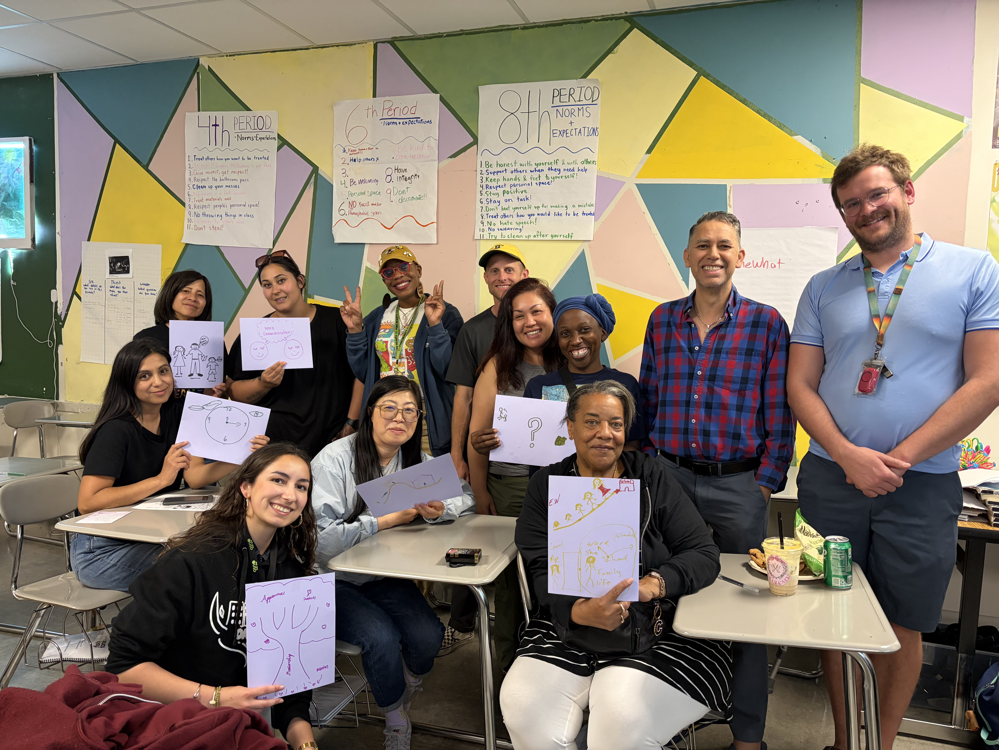
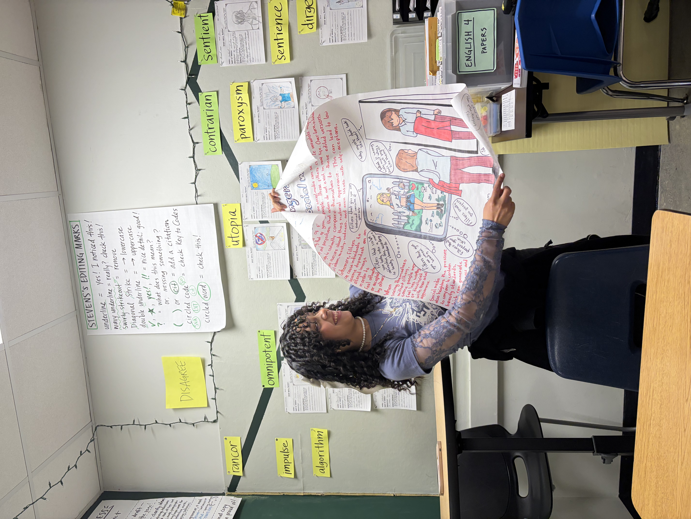
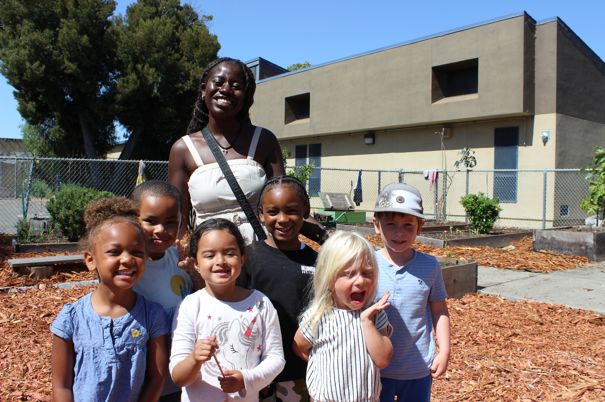
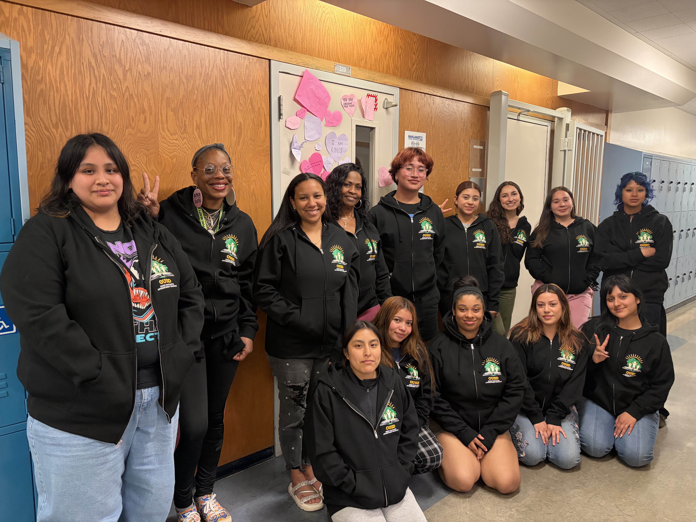
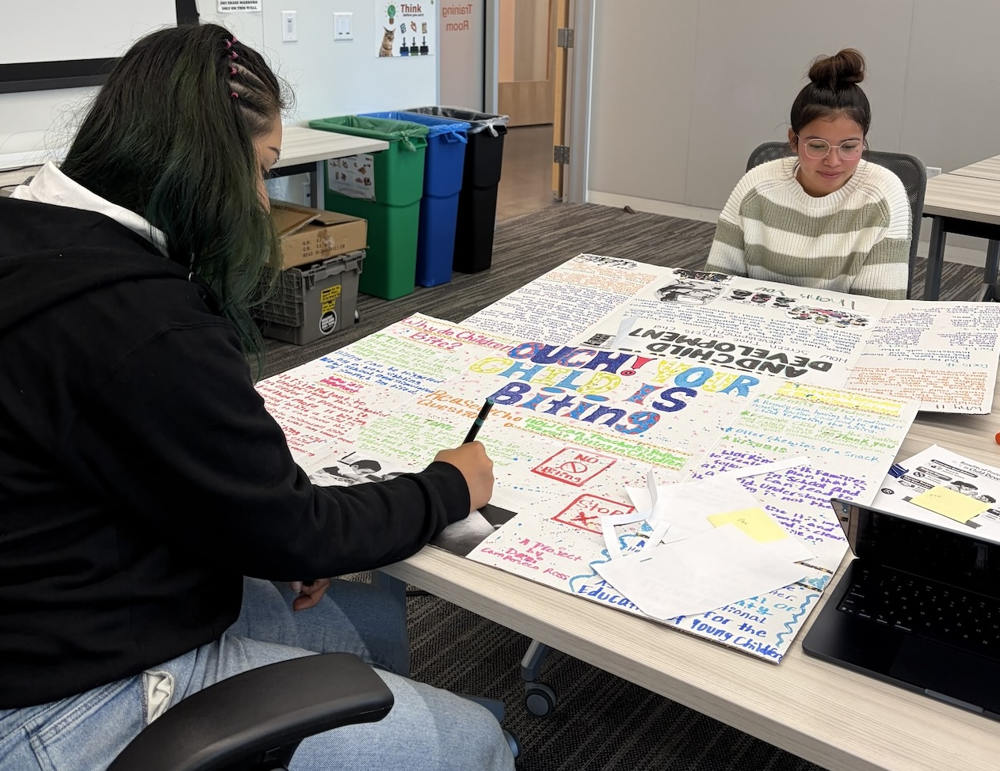
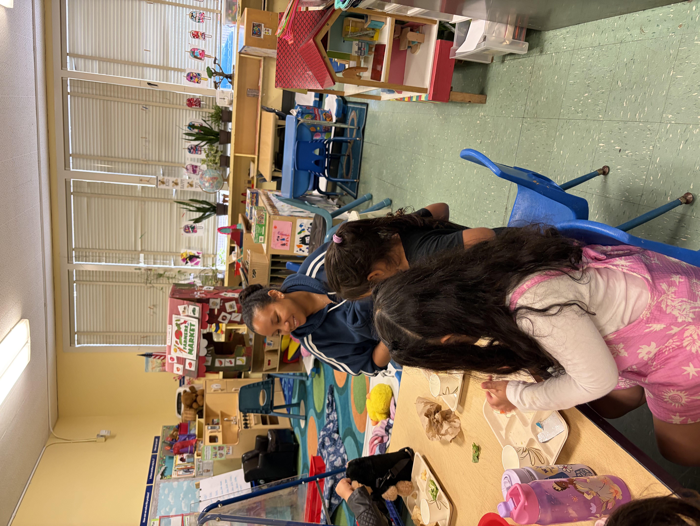

Inside the Apprenticeship Experience
From college coursework to classroom learning, EEAP apprentices grow together every step of the way.




EARLY EDUCATOR PATHWAY
A paid earn-and-learn pathway for current Oakland Unified employees pursuing careers in Early Childhood Education.
Complete Interest FormYears
FREE UC/CSU Units
Paid Apprenticeship
Master Teacher Permit
The Early Educator Apprenticeship Program (EEAP) is a 2–3 year paid, earn-and-learn program for current Oakland Unified employees who are passionate about working with children and families.
Apprentices continue working in their current roles while taking evening college courses that prepare them for careers in Early Childhood Education.
Participants earn up to 48 FREE UC/CSU transferable units, work toward the Child Development Master Teacher Permit, and receive individualized mentoring and career support.

Continue working while completing your college coursework.
Earn up to 48 UC/CSU transferable college units at no cost.
Receive advising, tutoring, coaching, and case management.
Transportation stipends, free books, child care, and academic support.

Apprentices attend evening college classes while continuing to work in Oakland Unified schools. Coursework combines child development, family engagement, culturally responsive teaching, and general education requirements.

Apprentices continue serving students in their current school-based roles while putting new skills into practice. The program combines classroom learning with meaningful, hands-on experience supporting young children and families.
Current OUSD employees aged 18-24 interested in pursuing a career in Early Childhood Education who are able to commit to evening college classes.
From college coursework to classroom learning, EEAP apprentices grow together every step of the way.



Join the Early Educator Apprenticeship Program and build your future while continuing to serve Oakland students.
Complete an Interest Form